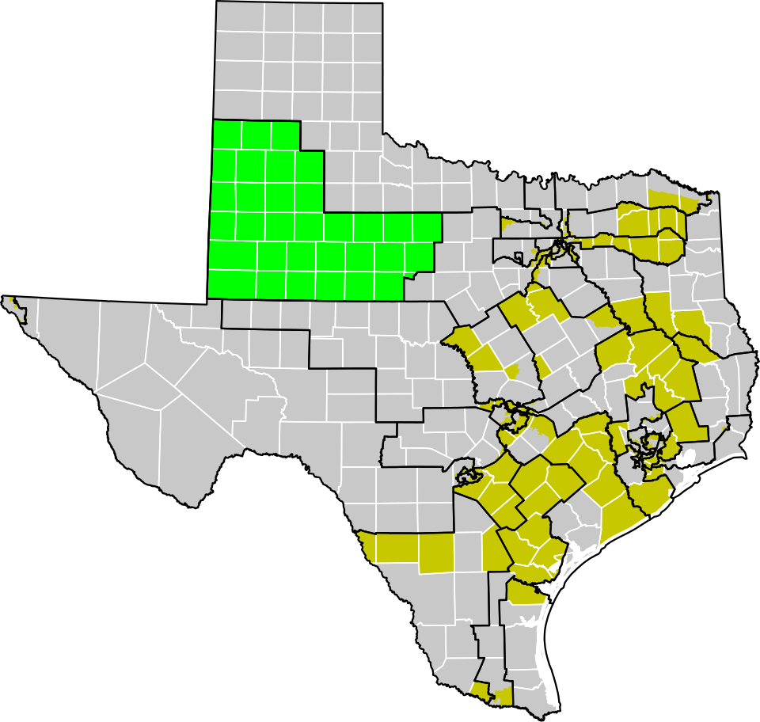

🏛️ Chapter 4: The Texas Legislature 🤠
Explore the lawmaking branch of Texas government and how bills become laws
🎓 Welcome, Trailblazer!
Enter your name to begin your Texas legislative journey:
Introduction to the Texas Legislature
Learn about the lawmaking branch of Texas government and its constitutional foundation.
Structure and Function
Explore the bicameral system with the Senate and House of Representatives.
Legislative Sessions
Understand regular and special sessions of the Texas Legislature.
Redistricting
Learn how legislative districts are drawn and the controversies involved.
Qualifications for Service
Discover the requirements to become a Texas legislator.
Demographic Composition
Examine the makeup of the Texas Legislature by party, gender, and age.
The Legislative Process
Follow a bill's journey from introduction to becoming law.
Compensation and Immunities
Learn about legislator pay, benefits, and constitutional protections.
Key Terms and Glossary
Master the essential vocabulary of Texas legislative process.
Introduction to the Texas Legislature
🎯 Learning Objectives
- Outline the function, structure, and responsibilities of the Texas legislature
This chapter examines the Texas State Legislature—the lawmaking branch of Texas government. The Texas State Capitol, located in downtown Austin, Texas, houses the offices and chambers of the Texas Legislature.
+15 points! 🎉 You've discovered an important insight!
The Texas Legislature is the lawmaking branch of Texas government, responsible for creating the laws that govern the state. It is described in Article 3 of the Texas Constitution and serves as the constitutional successor of the Congress of the Republic of Texas after Texas's 1845 entrance into the Union. The Legislature held its first regular session from February 16 to May 13, 1846.
+15 points! 🌟 Main duties revealed!
The duties of the legislature include consideration of proposed laws and resolutions, consideration of proposed constitutional amendments for submission to the voters, and appropriation of all funds for the operation of state government. All bills for raising revenue considered by the legislature must originate in the House of Representatives. The House alone can bring impeachment charges against a statewide officer, which charges must be tried by the Senate.
Structure and Function of the Texas Legislature
🎯 Learning Objectives
- Describe the function and structure of the Texas legislature
The structure of any institution or organization matters a great deal. The structure can determine how well an institution fulfills its duties and responsibilities. Article 3 of the Texas Constitution describes the legislative department (branch) of Texas.
Texas Senate (Upper House)
Each district has an ideal 2010 census population of 811,147
Texas House (Lower House)
Each district has an ideal 2010 census population of 167,637
+15 points! 🎉 District system explained!
Texas uses single-member districts, meaning each member of the Texas Legislature represents one legislative district. This is also true of congressional seats. Every ten years, after the U.S. census, the state legislative districts and congressional districts are redrawn to maintain proportional representation. This is also called reapportionment when it is done at the national level because all 435 seats have to be approximately equal in size. This causes some states to lose or gain seats every ten years based on their changing population.
+15 points! 🌟 Leadership structure revealed!
Although members are elected on partisan ballots, both houses of the Legislature are officially organized on a nonpartisan basis, with members of both parties serving in leadership positions such as committee chairmanships. The Lieutenant Governor (currently Dan Patrick), elected statewide separately from the governor, presides over the Senate, while the Speaker of the House (currently Dade Phelan from the Beaumont area) is elected from that body by its members. Both have wide latitude in choosing committee membership in their respective houses and have a large impact on lawmaking in the state.
Legislative Sessions
Understanding when and how the Texas Legislature meets is crucial to understanding how laws are made in Texas.
+15 points! 🎉 Special sessions explained!
Only the governor may call the legislature into special sessions, unlike other states where the legislature may call itself into session. The governor may call as many sessions as he or she desires. For example, Governor Rick Perry called three consecutive sessions to address the 2003 Texas congressional redistricting. The Texas Constitution limits the duration of each special session to 30 days; lawmakers may consider only those issues designated by the governor in his "call," or proclamation convening the special session (though other issues may be added by the Governor during a session).
Regular Session
Meets every odd-numbered year starting the second Tuesday in January
Special Session
Called only by the Governor; limited to issues designated by the Governor
+15 points! 🌟 Legislative philosophy revealed!
Much like the Framers of the U.S. Constitution, the men who wrote the Texas Constitution recognized the benefit of slowing down the legislative process. Moreover, there are a total of 181 members of the Texas Legislature: 31 Senators, and 150 members of the House. The different sizes of each chamber also play a role in how well they function. The bicameral structure forces compromise between chambers before legislation can proceed.
Redistricting
The federal government stipulates that districts must have nearly equal populations and must not discriminate on the basis of race or ethnicity based on the U.S. Supreme Court case of Reynolds v. Sims (1964).

+15 points! 🎉 Constitutional requirement revealed!
The federal constitution calls for reapportionment of congressional seats according to population from a decennial census (Section 2, Article I). Reapportionment is the division of a set number of districts among established units of government. For example, the 435 congressional seats are reapportioned among the 50 states after each decennial census according to the method of equal proportions. The Texas Constitution requires the legislature to redistrict Texas house and senate seats during its first regular session following publication of each United States decennial census (Section 28, Article III).
+15 points! 🌟 Backup system explained!
If Texas senate or house districts are not enacted during the first regular session following the publication of the decennial census, the Texas Constitution requires that the Legislative Redistricting Board (LRB), a five-member body of state officials including the lieutenant governor and speaker, meet and adopt its own plan. The LRB has jurisdiction only in the months immediately following that regular session. If congressional or State Board of Education districts are not enacted during the regular session, the governor may call a special session to consider the matter.
+15 points! ⚖️ Voting Rights Act explained!
Section 2 of the Voting Rights Act of 1965 mandates that electoral district lines cannot be drawn in such a manner as to "improperly dilute minorities' voting power." States may create majority-minority districts—districts in which minority groups compose a majority of the district's total population—to comply with Section 2. As of 2015, Texas was home to 18 congressional majority-minority districts. Proponents argue these districts prevent "cracking" (dividing a constituency between several districts to prevent it from achieving a majority in any one district). Critics contend they can result in "packing" (placing a voting group within a single district, minimizing its influence in other districts).
Qualifications for Service in the Texas Legislature
🎯 Learning Objectives
- Discuss the qualifications for service in the Texas State Legislature
The following are the legal requirements in order for someone to meet the qualifications to become a member of the Texas Legislature.
🏛️ Texas Representative (House)
- U.S. Citizen
- 2 years as a resident of Texas
- 12 months as a resident of their District
- At least 21 years old
- 2-year terms with unlimited terms, no term limit
🏛️ Texas Senator
- U.S. Citizen
- 5 years as a resident of Texas
- 12 months as a resident of their District
- At least 26 years old
- 4-year terms with unlimited terms, no term limit
+15 points! 🎉 Senate election cycles revealed!
Each senator serves a four-year term and one-half of the Senate membership is elected every two years in even-numbered years, with the exception that all the Senate seats are up for election for the first legislature following the decennial census in order to reflect the newly redrawn districts. After the initial election, the Senate is divided by lot into two classes, with one class having a re-election after two years and the other having a re-election after four years. This process protects the Senate's membership and the Senate as an institution serving as the more elite legislative chamber during normal election cycles.
+15 points! 🌟 Design philosophy revealed!
The Senate is designed to be the more "elite" or deliberative body, which is why senators must be older (26 vs. 21) and have longer residency in Texas (5 years vs. 2 years). Senators also serve longer terms (4 years vs. 2 years), allowing them to take a longer-term view on policy matters. The House, with its shorter terms, is designed to be more responsive to the immediate will of the people.
Demographic Composition of the Texas State Legislature
🎯 Learning Objectives
- Discuss the demographic composition of the Texas House of Representatives and the Texas Senate

+15 points! 🎉 Party composition revealed!
The Republican Party controls both the Texas State House of Representatives and the Texas State Senate. As of the 87th Legislative Session (January 2021):
Texas State House: 83 Republicans and 67 Democrats
Texas State Senate: 18 Republicans and 13 Democrats
+15 points! 🌟 Gender composition revealed!
The Texas State Legislature is predominantly male. Although their overall count is growing, women remain incredibly outnumbered in the 87th Texas Legislature—just 48 of 181 seats in the House and Senate are currently held by women:
• Approximately 25% of the Texas State House of Representatives is female (112 males, 38 females)
• Approximately 32% of the Texas State Senate is female (21 males, 10 females)
• Taken together, only 27% of the total membership of the Texas State Legislature is female (48 of 181 total members)
Notably, with the addition of Democrats Julie Johnson, Jessica González, and Erin Zwiener to the 86th Legislature in 2019, the number of legislators who identify as members of the LGBT community increased from two to five.
+15 points! 📊 Age demographics revealed!
The age distribution of Texas legislators shows the legislature skews older:
• Under 30: 0 members
• 30-39: 16 members (all House)
• 40-49: 44 members (43 House, 1 Senate)
• 50-59: 59 members (44 House, 15 Senate)
• 60-69: 36 members (29 House, 7 Senate)
• 70 and over: 25 members (17 House, 8 Senate)
The Legislative Process: How a Bill Becomes a Law
🎯 Learning Objectives
- Analyze the Texas legislative process (aka How a Bill Becomes a Law)
The legislature meets every odd-numbered year to write new laws and to find solutions to the problems facing the state. This meeting time, which begins on the second Tuesday in January and lasts 140 days, is called the regular session.
+15 points! 🎉 Decision-making factors revealed!
The people we elect to be lawmakers determine the rules we have to live by. So, it is good for us to understand what influences the decisions of lawmakers. We would like to believe that whatever they promised on the campaign trail will be what they deliver on in office. That is often not the case. We know that public opinion polls sometimes reflect how lawmakers will decide to vote on issues. We also know that interest groups play a role in how decisions are made. One of the biggest factors is probably political ideology—is the politician a conservative or a liberal? Partisanship might be a factor—is the politician a Republican or a Democrat?
+15 points! 🌟 Committee process explained!
After a bill has been introduced, a short description of the bill, called a caption, is read aloud while the chamber is in session (first reading), and the presiding officer assigns the bill to a committee. The chair of each committee decides when the committee will meet and which bills will be considered. Public testimony is almost always solicited on bills, allowing citizens the opportunity to present arguments on different sides of an issue. A House committee must post notice at least five calendar days before a hearing during a regular session. After considering a bill, a committee may choose to take no action or may issue a report on the bill.
+15 points! ⚖️ Senate procedure revealed!
At the beginning of each legislative session, a "blocker bill" is placed on the regular order of business. This bill will never be brought to the floor for action. Consequently, unless the sponsor of the bill has talked to the president of the Senate, indicating intent to suspend the rules and bring a bill to the floor, the bill will not be considered. Thus, the president of the Senate maintains a so-called "intent calendar," which determines the order of business in the Senate. In 2021, the Senate Rules required a vote of 18 members to suspend the rules so that a bill on the intent calendar could be considered on the floor.
When a bill comes up for consideration by the full House or Senate, it receives its second reading. The bill is read, again by caption only, and then debated by the full membership of the chamber. Any member may offer an amendment, but it must be approved by a majority of the members present and voting to be adopted.
+15 points! 📋 Conference committees explained!
The Texas Constitution requires a bill to pass both chambers in identical form. If a bill is returned to the originating chamber with amendments, the originating chamber can either agree to the amendments or request a conference committee to work out differences. Conference committees are composed of five members from each house appointed by the presiding officers. Once the conference committee reaches agreement, a conference committee report is prepared and must be approved by at least three of the five conferees from each house. Conference committee reports must be approved or rejected without amendment.
+15 points! 📅 Effective dates explained!
Any bill passed by the Legislature takes effect 90 days after its passage unless two-thirds of each house votes to give the bill either immediate effect or earlier effect. The Legislature may provide for an effective date that is after the 90th day. Under current legislative practice, most bills are given an effective date of September 1 in odd-numbered years (September 1 is the start of the state's fiscal year).
Compensation, Privileges, and Immunities
🎯 Learning Objectives
- Discuss the basic compensation, privileges, and immunities of Texas legislators
+15 points! 🎉 Retirement benefits revealed!
Legislators receive a pension after eight years of service, starting at age 60. A legislator's pension is based not on a legislator's salary of $600 a month, but on the current salary of a Texas state district court judge—a base salary of $140,000 per year. This means legislators receive a much more generous pension than their low official salary would suggest.
+15 points! 🌟 Constitutional protection revealed!
The Texas Constitution (Article III, Section 21) grants Texas state legislators a fundamental protection of free speech and debate. This immunity protects legislators from punitive executive or judicial action. The intent is to allow lawmakers to work independently and unimpeded by the threat of intervention from the other branches of government in the discharge of their legislative duties.
+15 points! ⚖️ Arrest protections explained!
Texas state legislators are also protected from arrest traveling to and from and during legislative sessions. Exceptions include treason, felony, or breach of the peace. This protection ensures legislators can attend sessions without fear of arrest for minor offenses that might be used to prevent them from voting.
Key Terms and Glossary
Master these essential terms to understand the Texas legislative process.
+15 points! 🎉 Glossary mastery!
Understanding these terms is essential for comprehending how the Texas Legislature functions. Terms like "gerrymandering," "cracking," and "packing" describe the controversies surrounding redistricting. Terms like "biennial sessions" and "special session" explain when and how the legislature meets. Being familiar with this vocabulary will help you follow news about the Texas Legislature and understand your rights as a citizen.
Use your browser's "Save as PDF" option. Submit this PDF — screenshots will not be accepted.
TCC Trailblazer Trek - Completion Report
Chapter 4: The Texas Legislature
| Section | Topic | Status | Points | Time |
|---|---|---|---|---|
| 1 | Introduction to the Texas Legislature | ❌ | 0/170 | --:-- |
| 2 | Structure and Function | ❌ | 0/180 | --:-- |
| 3 | Legislative Sessions | ❌ | 0/170 | --:-- |
| 4 | Redistricting | ❌ | 0/215 | --:-- |
| 5 | Qualifications for Service | ❌ | 0/170 | --:-- |
| 6 | Demographic Composition | ❌ | 0/200 | --:-- |
| 7 | The Legislative Process | ❌ | 0/285 | --:-- |
| 8 | Compensation and Immunities | ❌ | 0/200 | --:-- |
| 9 | Key Terms and Glossary | ❌ | 0/140 | --:-- |
⏱️ Time Analysis
Instructor Note: This report documents the student's completion of Chapter 4: The Texas Legislature. Time spent per section is tracked automatically—sections completed faster than expected will trigger a pacing alert.